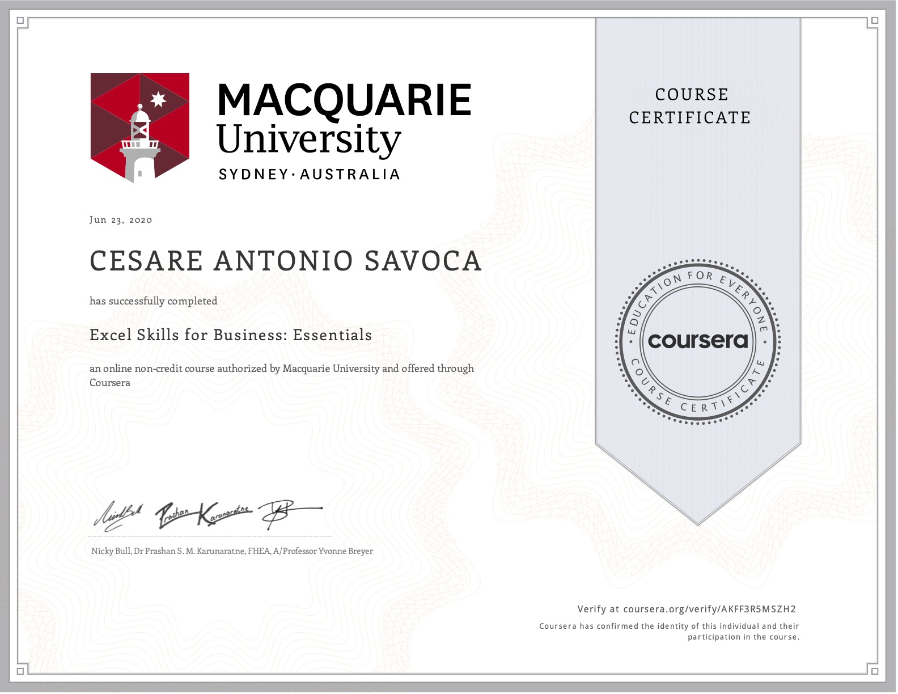

Associazione “Gioca e Impara” di Cesare Savoca
Ho creato una piattaforma digitale su base WordPress che mette in contatto genitori e baby-sitter. Mi sono occupato nello specifico della creazione delle pagine web con l’aiuto di page-builder (Elementor) e con l’aiuto di alcuni plugin (ArMember, Amelia). Mi occupo tutt’ora della creazione e pubblicazione dei contenuti social (Facebook, Instagram) e della creazione di campagne ADS (Google, Facebook, Instagram). Inoltre coordino le baby-sitter dalla fase di registrazione attraverso un’analisi accurata del CV e delle referenze, alla fase di primo colloquio con i genitori.
More ADV
Ho collaborato come freelance presso un’agenzia di marketing nella stesura di piani marketing e strategie digitali per e-commerce e piattaforme web. Grazie a questo impiego ho anche appreso le modalità di creazione di campagne ADS (Google, Facebook, Instaqgram). Inoltre sempre per conto dell’agenzie ricercavo clienti e concordavo con gli stessi i preventivi per i servizi che richiedevano.
Attività o settore Settore digitale/Commerciale
A.S.D. Giovani Catania di Campanella Vincenzo
Gestione della documentazione contabile generale e fiscale, inoltre mi occupavo delle relazioni con i clienti e con il pubblico. Mi sono inoltre occupato di formare, ricercare e gestire sia il personale che le attività lavorative. Tramite accordi che prendevo con i circoli didattici nei quali lavoravo infine mi sono occupato di organizzare attività extracurriculari (attività sportive, ludico/ricreative e grest estivi)
Attività o settore Commerciale/ Risorse umane
Laurea in Economia Aziendale
Principali materie:
Excell for Business su Coursera
Studio del programma Excell del pacchetto Office Windows
Corso di formazione su Start2Impact
Principali materie: